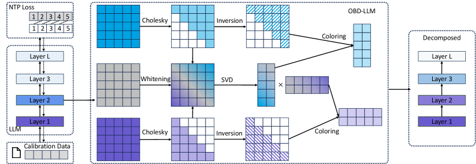

Why it matters왜 중요한가
Every practical low-rank compressor of the last two years — ASVD, SVD-LLM, and friends — only looks "backwards" at what flows into a layer. OBD-LLM says the layer's future matters just as much, and derives it from first principles.
지난 2년의 실용적 저랭크 압축기들 — ASVD, SVD-LLM 등 — 은 모두 레이어로 들어오는 정보만 "뒤돌아" 본다. OBD-LLM은 그 레이어의 미래도 그만큼 중요하다고 말하고, 이를 원리에서부터 유도한다.
SVD alone (Eckart–Young) minimizes Frobenius error on the raw weight, which is blind to how the model actually uses it. SVD-LLM fixed part of this by whitening with the input-activation covariance Cx — a loss-aware step that made it state of the art. But that quietly assumes the output-gradient covariance is the identity. OBD-LLM revisits the classic Optimal Brain Surgeon idea: write the loss increase as a quadratic form in the weight error, ∆L = tr(∆W⊤ Cg ∆W Cx), where the Hessian factorizes (via K-FAC) into an input covariance Cx and an output-gradient covariance Cg. Ignoring Cg is exactly what everyone did — and it is provably suboptimal.
SVD 단독(Eckart–Young)은 원시 가중치의 Frobenius 오차를 최소화하지만, 모델이 그것을 실제로 어떻게 쓰는지는 보지 못한다. SVD-LLM은 입력 활성 공분산 Cx로 화이트닝하여 일부를 고쳤고 — 손실을 고려하는 이 단계 덕에 SOTA가 됐다 — 하지만 이는 출력 그래디언트 공분산이 항등행렬이라고 조용히 가정한다. OBD-LLM은 고전적 Optimal Brain Surgeon 아이디어로 돌아가, 손실 증가를 가중치 오차의 이차형식 ∆L = tr(∆W⊤ Cg ∆W Cx) 로 쓴다. 여기서 헤시안은 (K-FAC로) 입력 공분산 Cx 와 출력 그래디언트 공분산 Cg 로 분해된다. Cg를 무시한 것이 바로 모두가 한 일이며, 이는 증명 가능하게 최적이 아니다.

By the numbers핵심 숫자
Perplexity vs prior SVD methods기존 SVD 방법 대비 Perplexity
| Compression압축률 | ASVD | SVD-LLM | OBD-LLM (Ours) |
|---|---|---|---|
| 10% | 29.68 | 21.23 | 15.73 |
| 20% | 121.3 | 49.88 | 32.92 |
| 30% | 927.2 | 160.3 | 70.83 |
| 40% | 2253 | 679.8 | 167.3 |
The two ideas두 가지 핵심 아이디어
Hessian = input ⊗ output
Instead of the raw Frobenius error, measure decomposition damage in the task-loss geometry. For a linear layer, the loss Hessian is a Kronecker product Hw = Cx ⊗ Cg of the input-activation covariance and the output-gradient covariance — a K-FAC approximation the authors verify is tight (input–gradient correlation ρ ≤ 0.1 in every LLaMA-3-8B layer).
원시 Frobenius 오차 대신, 분해로 인한 손상을 태스크 손실 기하에서 측정한다. 선형 레이어의 손실 헤시안은 입력 활성 공분산과 출력 그래디언트 공분산의 크로네커 곱 Hw = Cx ⊗ Cg 이며 — 저자들은 이 K-FAC 근사가 타이트함을 검증한다(모든 LLaMA-3-8B 레이어에서 입력–그래디언트 상관 ρ ≤ 0.1).
Closed-form optimum
The objective collapses to ‖Lg⊤ ∆W Lx‖F2, where Lx, Lg are Cholesky factors of the two covariances. So: whiten the weight on both sides, take the plain SVD there, then invert the whitening ("coloring"). SVD-LLM is exactly the special case where you drop Lg.
목적함수는 ‖Lg⊤ ∆W Lx‖F2 로 정리된다. 여기서 Lx, Lg는 두 공분산의 Cholesky 인자다. 즉 가중치를 양쪽에서 화이트닝하고 그 공간에서 순수 SVD를 취한 뒤, 화이트닝을 역변환("컬러링")한다. SVD-LLM은 Lg를 빼버린 특수한 경우일 뿐이다.
How it works어떻게 작동하나
- Collect covariances.공분산 수집.Feed 128 calibration sequences; gather the input-activation covariance Cx and the output-gradient covariance Cg (from a next-token-prediction loss). ~3 minutes total.128개 캘리브레이션 시퀀스를 통과시켜 입력 활성 공분산 Cx와 (다음 토큰 예측 손실로부터) 출력 그래디언트 공분산 Cg를 모은다. 전체 약 3분.
- Cholesky-factorize both.양쪽 Cholesky 분해.Cx = LxLx⊤ and Cg = LgLg⊤, with 10% diagonal dampening for numerical stability.Cx = LxLx⊤, Cg = LgLg⊤. 수치 안정성을 위해 대각에 10% 댐핑.
- Whiten → SVD → truncate.화이트닝 → SVD → 절단.Form W̃ = Lg⊤ W Lx, run standard SVD, keep the top-r singular directions.W̃ = Lg⊤ W Lx 를 만들어 표준 SVD를 수행하고 상위 r개 특이 방향만 남긴다.
- Color back.컬러링(역변환).Recover the factors in the original space via inverse Cholesky — done with an O(n²) triangular solve, never an explicit inverse.역 Cholesky로 원래 공간의 인자를 복원한다 — 명시적 역행렬 없이 O(n²) 삼각 해법(triangular solve)으로 처리.
What to take away그래서, 가져갈 것
It's a drop-in on any linear layer, and the same bi-directional whitening also improves quant/prune + low-rank compensation (beats EoRA) and low-rank KV-cache compression (beats PaLU: 32.3 vs 30.8 LongBench at 50%).
어떤 선형 레이어에도 바로 적용되고, 같은 양방향 화이트닝이 양자화/프루닝 + 저랭크 보상(EoRA 능가)과 저랭크 KV 캐시 압축(PaLU 능가: 50%에서 LongBench 32.3 vs 30.8)까지 개선한다.
The conceptual takeaway: for compression, a layer's output-side gradient statistics carry as much information as its input activations. Whitening only the input (SVD-LLM) leaves accuracy on the table.
개념적 교훈: 압축에서 레이어의 출력 쪽 그래디언트 통계는 입력 활성만큼의 정보를 담는다. 입력만 화이트닝(SVD-LLM)하면 정확도를 그냥 버리는 셈이다.
It's nearly free: the extra Cholesky and triangular-solve add only 4–7% latency because the O(n³) SVD dominates anyway.
비용은 거의 없다: 추가 Cholesky와 삼각 해법은 지연을 4–7%만 늘리는데, 어차피 O(n³) SVD가 지배적이기 때문이다.